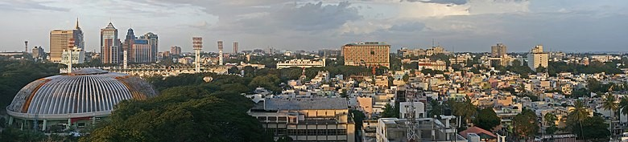

Bangalore is one of the fastest-growing metropolises in India.
Economy of BangaloreBangalore contributes 38% of India's total IT exports.
Its economy is primarily service oriented and industrial, dominated by information technology, telecommunication, biotechnology, and manufacturing of electronics, machinery, automobiles, food, etc.
Major industrial areas around Bangalore,The growth of IT has presented the city with unique challenges.Ideological clashes sometimes occur between the city's IT moguls, who demand an improvement in
the city's infrastructure; and the state government, whose electorate is primarily from rural Karnataka. The encouragement of high-tech industry in Bangalore, for example, has not favoured local
employment development, but instead increased land vaues and forced out small enterprise.The city is widely regarded as the
Silicon Valley of India,
as the largest IT hub of the continent.
Infosys , Wipro , Mindtree , Mphasis , Flipkart , Myntra ,
are headquartered in Bangalore.Information technology companies located in the city contributed 33% of India's ₹1,442 billion (US$20 billion) IT exports in 2006–0700. Bangalore's IT industry is divided
into three main clusters: Software Technology Parks of India (STPI); International Tech Park, Bangalore (ITPB); and Electronic City. Most of the IT companies are located in Bommanahalli, Domlur, Whitefield,
Electronic City, Krishnarajapuram, Bellandur, Mahadevapura.